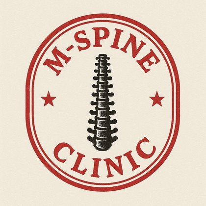
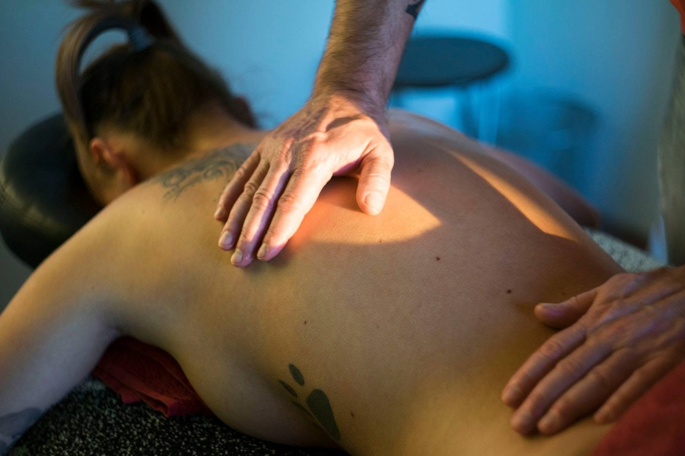
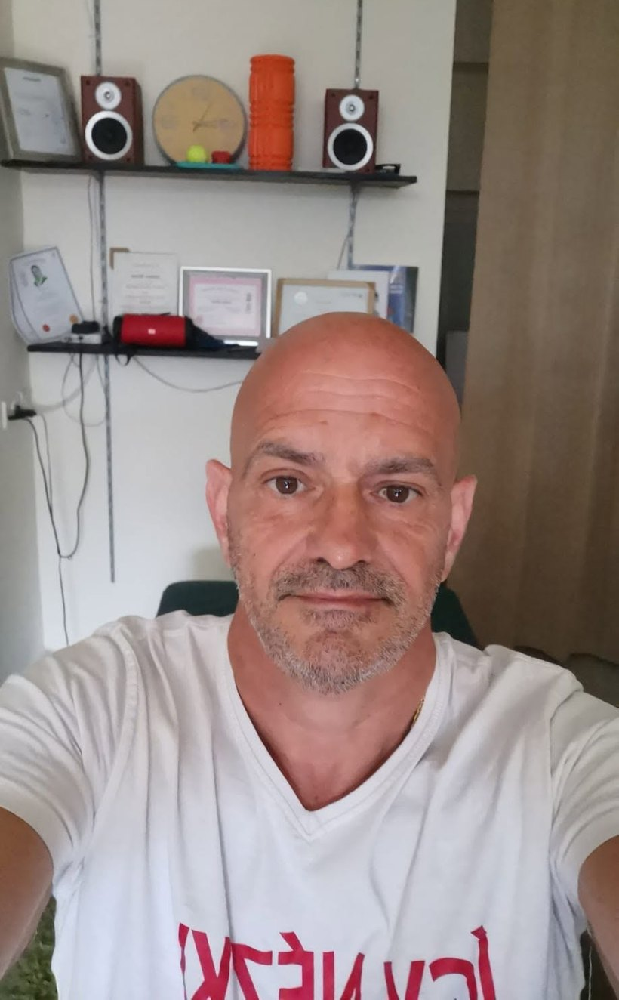
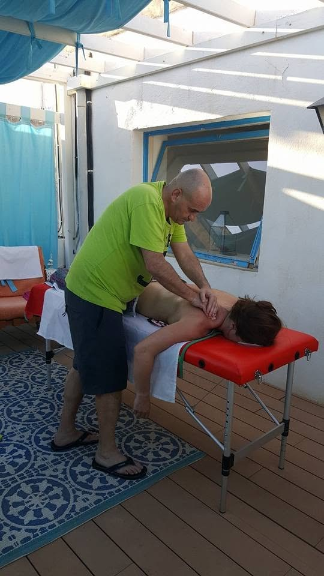
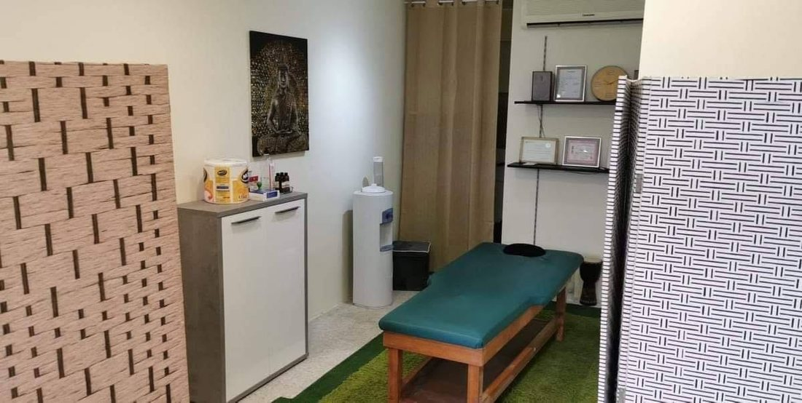

Mobile Spine ClinicQawra · Malta
Qawra, Malta · Open every day
Deep tissue, sports massage and spinal work. Lorant works out what is causing the pain before he touches anything.
Message on WhatsAppThe room
A spa, a chiropractor, the place down the road. It comes up again and again in the reviews: the pain came back because the work went where it hurt, not where it started.
The line people repeat about Lorant is how quickly he works out what is actually wrong. One reviewer wrote that he hits every spot without being told where they are.


Being straight
Those are his own words, posted on his page in September 2024:
"Please note that I am a therapist, not a chiropractor, and I am not a doctor. I have developed my own unique massage therapy approach, which combines all the techniques I’ve learned over the years to address your specific issues. This is not just a simple massage or a quick bone adjustment—it’s a comprehensive, personalized treatment."
Lorant, on the clinic's Facebook page
So this page does not diagnose anything and does not promise what one session will do. If something needs a doctor, it needs a doctor.

Treatments
Slow, heavy work into the layers a relaxing massage never reaches. This is the one people come back for, and the one that shows up most in the reviews.
Ask about thisFor people who train. One regular writes that it is what keeps his tennis and squash going through an old injury, and singles out the stretching advice given afterwards.
Ask about thisFinding the knot that is sending pain somewhere else entirely. Often the reason a shoulder hurts when the problem is nowhere near the shoulder.
Ask about thisWhat reviewers call the cracking. It happens in the same session as the soft tissue work rather than being a separate appointment somewhere else. One reviewer said that is exactly what makes this better value than the alternatives on the island.
Ask about thisBoth were added to the room a while back, and a reviewer named them specifically when describing what keeps the practice moving forward.
Ask about thisAnara Uzhanova's side of the practice. Reviewers who mention her put her on exactly the same level as Lorant.
Ask about thisWhere it works
Seen from behind. Highlighted for the treatment selected on the left.
In their words
Copied word for word from Google. Two of the sixty one are one star, and this page is not pretending otherwise.
"Lorant and his wife Anara are absolutely outstanding at what they do… I have tried massage therapies in Thailand, Edinburgh, Serbia and others here in Malta, this is amongst the very best ones out there!"
Bojan Brescanski · Google
"…The first time with a huge pain in my lower back - he fixed it! This time it was a stiff neck emergency - walked in like a robot and came out as if nothing happened!"
Mark Sammut · Google
"…What truly sets them apart is the extra attention and advice they give on stretching and self-massaging after training."
Artur Lengyel · Google
"Always professional, both Lorant and his wife know what they are doing and are hitting all spots, without even telling them. True masters at their craft."
Kristina Ilievska · Google
Finding the place
Last thing
Say what hurts, how long it has been going on, and what you have already tried. That is enough to start.
Message +356 9926 0483